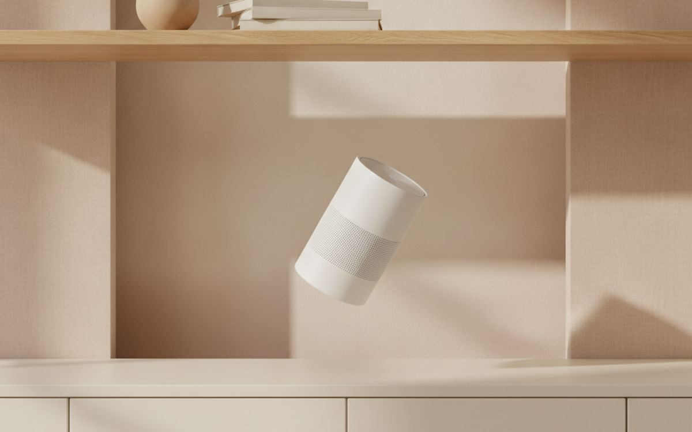
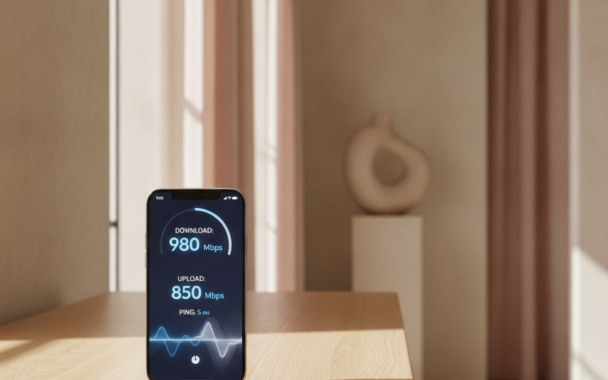
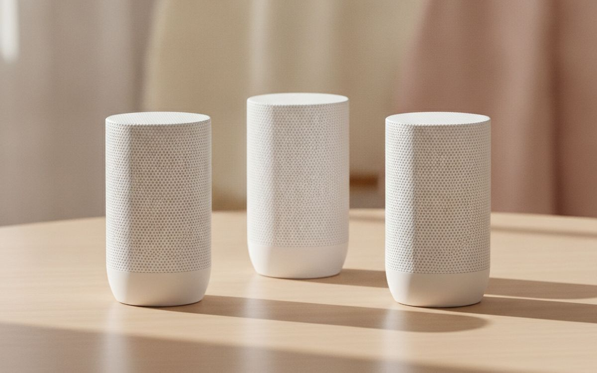
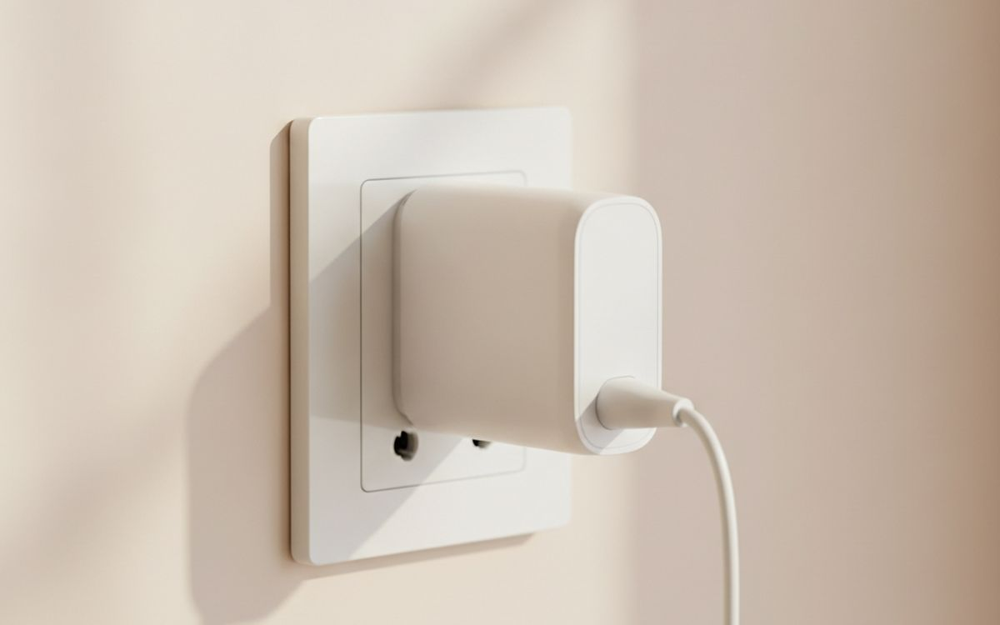
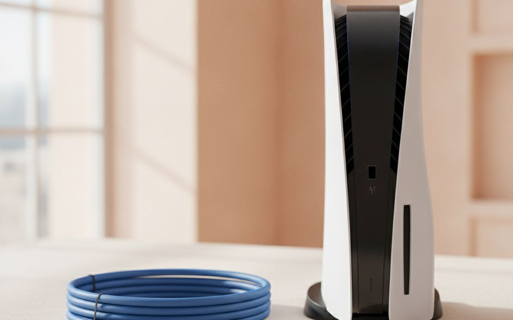
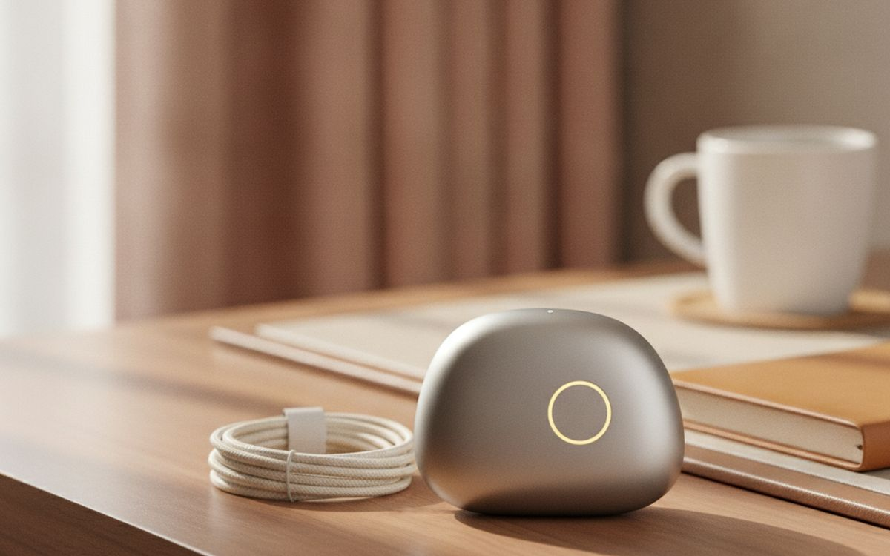
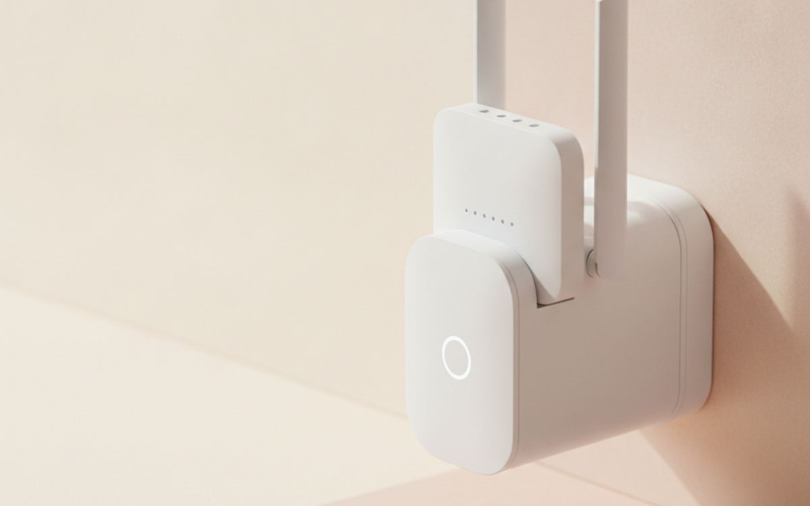
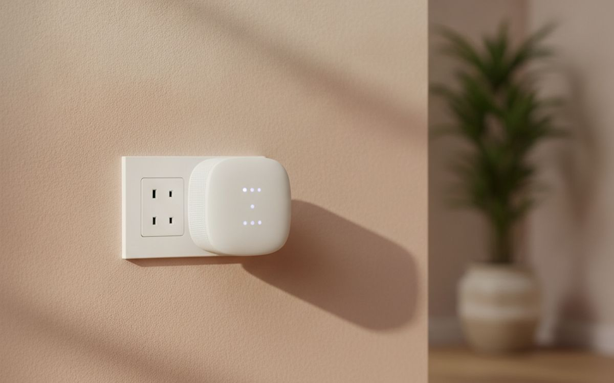

When the Wi-Fi is bad in the bedroom, most people call their provider and pay for a faster plan. It rarely helps. The internet coming into the house is usually fine; the problem is the last thirty feet between the router and your laptop, and a faster plan does nothing about walls, floors and a router hidden in a cabinet.
So this list is ordered by leverage. Start at the top, test after each step, and stop when the problem goes away. Plenty of people fix their dead zone at step two and never spend a dollar.
Prices below are approximate street prices at the time of writing and move around constantly, especially during sale events. Treat them as a rough band for budgeting, not a quote. Always check the live listing before you buy.
En bref
Moving the router you already have
The free first fix
Transparence. Les liens de cette page sont des liens affiliés. Si vous achetez via l’un d’eux, nous pouvons percevoir une commission sans surcoût pour vous. Cela n’influence ni le contenu de cette liste ni son ordre.
Comment nous avons choisi
These picks come from published lab testing, networking forums and long-run owner reports, cross-checked against current retail listings. We have not personally tested every item here. We favoured fixes that work for renters and non-technical households, and we have been blunt about which gadgets mostly move the problem around.
En un coup d’œil
Les prix sont indicatifs au moment de la rédaction et changent souvent.
Notre sélection

01 · The free first fixMoving the router you already have
Routers get installed wherever the cable comes into the house, which is often a corner, a basement or the inside of a TV cabinet. Wi-Fi spreads outward and slightly downward, and it hates metal, mirrors, fish tanks and thick walls. Moving the router out of the cabinet, up to shelf height and closer to the middle of the home can make a bigger difference than any purchase on this page. If the cable point is fixed, a longer coax or Ethernet run from the wall socket to a better spot costs a few dollars. The case for it: costs nothing, often fixes the problem outright, and takes ten minutes to test. The trade-off is real: limited by where the cable comes in and provider-installed boxes sometimes cannot be moved far, so weigh that against how often it would actually get used.
Free ($0)Le compromis: Limited by where the cable comes in
Pourquoi il est là
- Costs nothing
- Often fixes the problem outright
- Takes ten minutes to test
Bon à savoir
- Limited by where the cable comes in
- Provider-installed boxes sometimes cannot be moved far

02 · Finding the real dead spotA speed test app and a heat-map walk
Before buying anything, measure. Run a speed test next to the router, then in each room where things feel slow. If the speed next to the router is poor too, the problem is your plan or the provider's equipment, and no mesh kit will fix it. If it is fast by the router and collapses two rooms away, you have a coverage problem, and now you know exactly where. Free heat-map apps let you walk the house and see coverage drop. This step stops people buying the wrong fix. The case for it: separates plan problems from coverage problems, shows exactly which room needs help, and gives you a before-and-after number. The trade-off is real: results vary through the day and test on the device that actually struggles, so weigh that against how often it would actually get used.
Free ($0)Le compromis: Results vary through the day
Pourquoi il est là
- Separates plan problems from coverage problems
- Shows exactly which room needs help
- Gives you a before-and-after number
Bon à savoir
- Results vary through the day
- Test on the device that actually struggles

03 · The fix for most multi-room homesA three-pack Wi-Fi 6 or 6E mesh kit
Mesh systems replace one router with several units that pass your connection between them and appear as one network. You walk from the kitchen to the bedroom and your phone quietly moves to the nearest node. For a two-storey house or anything over roughly 1,500 square feet, a three-pack is the reliable answer. Wi-Fi 6 is plenty for most homes; 6E adds a less crowded band that helps in dense apartment blocks. TP-Link Deco, Eero and Asus ZenWiFi are the common families, and budget kits from all three are good. The case for it: one network name, whole-home coverage, easy app setup for non-technical households, and handles many devices at once. The trade-off is real: some brands push paid subscriptions for extra features and place nodes in open spots, not inside cabinets, so weigh that against how often it would actually get used.
$150-300Le compromis: Some brands push paid subscriptions for extra features
Pourquoi il est là
- One network name, whole-home coverage
- Easy app setup for non-technical households
- Handles many devices at once
Bon à savoir
- Some brands push paid subscriptions for extra features
- Place nodes in open spots, not inside cabinets
04 · Apartments and small homesA two-pack mesh kit
Most apartments do not need three units. A two-pack covers a typical one or two bedroom apartment, and the second node goes where the signal drops, usually the far bedroom or home office. You can add a third later if needed, since most brands let you expand within the same family. If you rent, mesh is also easy to take with you, which a wired fix is not. The case for it: right-sized for apartments, expandable later, and moves with you when you do. The trade-off is real: neighbours' networks still crowd the airwaves and mixing brands usually does not work, so weigh that against how often it would actually get used.
$100-180Le compromis: Neighbours' networks still crowd the airwaves
Pourquoi il est là
- Right-sized for apartments
- Expandable later
- Moves with you when you do
Bon à savoir
- Neighbours' networks still crowd the airwaves
- Mixing brands usually does not work

05 · Thick walls and concreteA powerline or MoCA adapter pair
Some homes defeat Wi-Fi entirely: plaster and lath, concrete, brick, or a garage office across the yard. Powerline adapters send data over your electrical wiring, and MoCA adapters use existing TV coax. Plug one near the router and one in the far room, and you get a wired connection without drilling. MoCA is usually faster and more reliable if you have coax in the right rooms. Powerline speed depends heavily on your wiring, so buy from a store with an easy return window. The case for it: gets through walls Wi-Fi cannot, no drilling or new cables, and some models add Wi-Fi at the far end. The trade-off is real: powerline speed depends on your wiring and must plug directly into the wall, not a power strip, so weigh that against how often it would actually get used.
$60-150Le compromis: Powerline speed depends on your wiring
Pourquoi il est là
- Gets through walls Wi-Fi cannot
- No drilling or new cables
- Some models add Wi-Fi at the far end
Bon à savoir
- Powerline speed depends on your wiring
- Must plug directly into the wall, not a power strip

06 · Desks, TVs and consoles near the routerA few Cat 6 cables
Anything that does not move and sits within reach of the router should be plugged in. A TV, console or desktop on a cable gets full speed, lower lag, and it stops competing with phones for Wi-Fi. That frees up the wireless network for everything else. Flat cables tuck under rugs and along skirting boards neatly. This is the cheapest performance upgrade in networking and it is badly underused. The case for it: full speed and lower lag, frees up Wi-Fi for other devices, and very cheap. The trade-off is real: only practical near the router or a mesh node and very long cheap cables can be poorly made, so weigh that against how often it would actually get used.
$8-20Le compromis: Only practical near the router or a mesh node
Pourquoi il est là
- Full speed and lower lag
- Frees up Wi-Fi for other devices
- Very cheap
Bon à savoir
- Only practical near the router or a mesh node
- Very long cheap cables can be poorly made
07 · Old laptops and desktop PCsA USB Wi-Fi 6 adapter
Sometimes the network is fine and the device is the problem. A laptop from 2016 has an old wireless chip that gets a fraction of what a modern router offers. A small USB Wi-Fi 6 adapter brings it up to date for the price of a takeout order. Desktop PCs without built-in Wi-Fi benefit the most. Check that the adapter supports your operating system before you buy, especially on Mac and Linux. The case for it: brings old machines up to modern speeds, plug-in, no opening the case, and cheap compared with a new laptop. The trade-off is real: driver support varies by operating system and uses up a USB port, so weigh that against how often it would actually get used.
$20-40Le compromis: Driver support varies by operating system
Pourquoi il est là
- Brings old machines up to modern speeds
- Plug-in, no opening the case
- Cheap compared with a new laptop
Bon à savoir
- Driver support varies by operating system
- Uses up a USB port

08 · Hotels and holiday rentalsA travel router
Hotel Wi-Fi often limits how many devices can join and makes you log in again on each one. A pocket travel router logs in once and then shares the connection with all your devices under your own network name. It also lets you plug into a wired hotel port where one exists, which is usually faster. GL.iNet makes the popular models. For families travelling with several tablets and a streaming stick, this ends the daily argument. The case for it: one login for all your devices, your own private network name, and useful at home as a backup. The trade-off is real: captive login pages need a few extra steps and cannot make a slow hotel connection faster, so weigh that against how often it would actually get used.
$30-90Le compromis: Captive login pages need a few extra steps
Pourquoi il est là
- One login for all your devices
- Your own private network name
- Useful at home as a backup
Bon à savoir
- Captive login pages need a few extra steps
- Cannot make a slow hotel connection faster

09 · Remote restartsA smart plug on the router
Every household has a person who restarts the router, and when they are away nobody knows how. A smart plug on a schedule, set to power-cycle the router at 4 AM once a week, prevents a lot of slow-down complaints on older provider equipment. It also lets you restart it from your phone while travelling, as long as a second connection path exists. Choose a plug that keeps its schedule locally, so it still works when the internet is down. The case for it: scheduled weekly restarts, anyone in the house can do it from an app, and cheap. The trade-off is real: useless for remote restarts if it needs the internet to work and a router that needs constant restarts may be failing, so weigh that against how often it would actually get used.
$10-20Le compromis: Useless for remote restarts if it needs the internet to work
Pourquoi il est là
- Scheduled weekly restarts
- Anyone in the house can do it from an app
- Cheap
Bon à savoir
- Useless for remote restarts if it needs the internet to work
- A router that needs constant restarts may be failing

10 · Last resort, one room onlyA single standalone range extender
Extenders are cheap and widely sold, which is why they are the most common wrong purchase in home networking. They repeat the router's signal, which usually halves speed, and many create a second network name your devices stick to after you walk away. For one fixed room that needs a basic connection, such as a printer or a guest bedroom, they are fine. For anything else, a mesh kit is worth the extra money. The case for it: cheapest way to reach one extra room, no setup beyond a button press, and good for low-demand devices. The trade-off is real: often halves the speed it repeats and devices may cling to the weaker network, so weigh that against how often it would actually get used.
$25-60Le compromis: Often halves the speed it repeats
Pourquoi il est là
- Cheapest way to reach one extra room
- No setup beyond a button press
- Good for low-demand devices
Bon à savoir
- Often halves the speed it repeats
- Devices may cling to the weaker network
Questions fréquentes
Will a faster internet plan fix slow Wi-Fi in one room?
Usually not. If speed is good next to the router and bad in the far room, the problem is coverage. Test first.
Mesh or extender?
Mesh for anything beyond one room. Extenders are a budget patch for a single low-demand device.
Do I need Wi-Fi 7?
Not for most homes yet. Wi-Fi 6 or 6E covers typical streaming, gaming and video calls, and costs much less.
Can I use mesh with my provider's router?
Yes. Most mesh kits plug into the provider box. Turning off the provider's own Wi-Fi reduces interference, and your provider can tell you how.
Les offres du jour
Voyez ce qui est en promotion en ce moment.
Offres →← Tous les guides
En tant que affilié AliExpress, nous percevons une commission sur les achats éligibles. Les prix et la disponibilité sont exacts à la date de publication et peuvent changer.